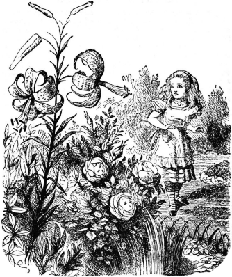

Location
Wonderland is a country located below Oxford. It is accessed through a rabbit hole, that takes you straight for some time until it dips suddenly, causing you to fall down a very deep well. It's so far down that Alice wonders if it's near the earth's surface (four thousand miles down), or at the antipode. Once at the bottom you find a long hallway, and turning the correct corner leads to another long, low hallway with doors. If you find the tiniest door, and a key you must be just the right size to reach, you will find Wonderland. There is a second way to enter that takes a great amount of imagination. You must find the Looking-glass House, imagine the glass getting soft like gauze, and you'll be able to enter.
Environment and Government
Once you enter through that tiny door or the looking glass, you'll discover the most wonderful gardens you'll ever see, lush wooded lands, an abundance of mushrooms, a beautiful seacoast, and few homes. Wonderland is ruled by the King and Queen of hearts. The queen mostly rules herself, but the king has the final decree. Playing cards help upkeep the castle and gardens. The hearts are the royal family, diamonds are courtiers, clubs are soldiers, and spades are servants. Lastly, there is a Duchess the owner of the Cheshire Cat.